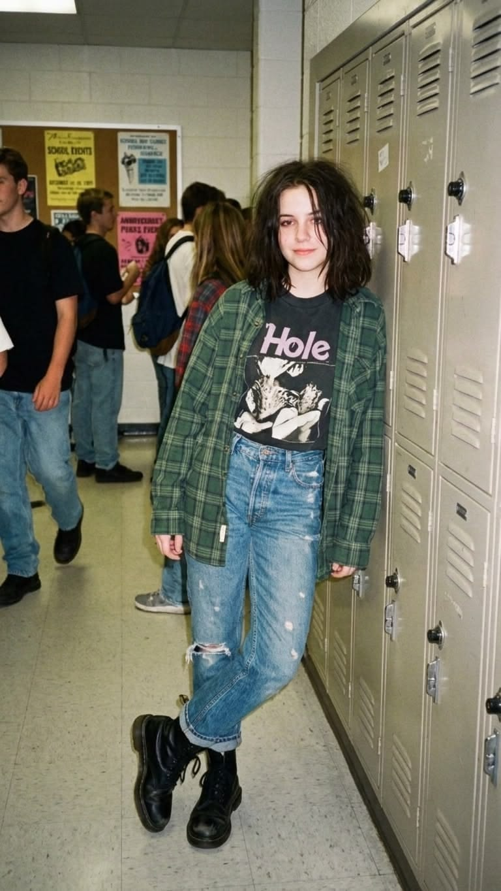
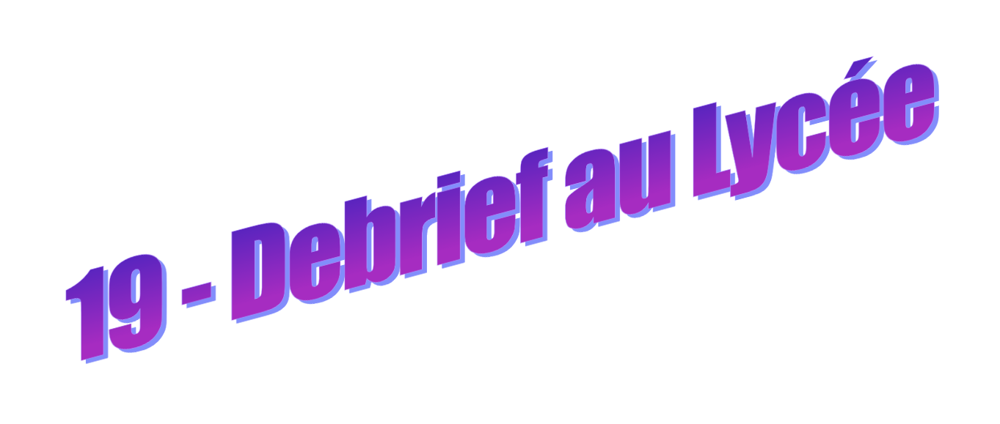
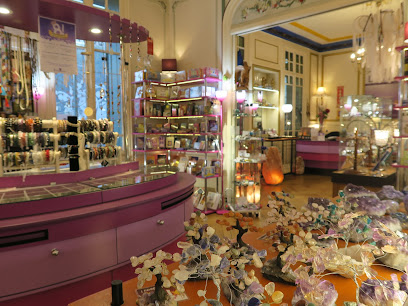
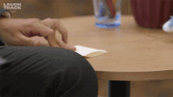

Le lendemain matin, tu arrives au lycée avec une boule dans l'estomac. Tu repères Vincent dès la récréation. Il est adossé au mur du bâtiment principal avec ses copains. Il rit à une plaisanterie que tu n'entends pas. Pendant quelques secondes, tu attends qu'il te remarque, qu'il te fasse un signe, qu'il vienne te parler. Mais rien, il ne t'adresse même pas un regard. Comme si la fête foraine n'avait jamais existé, comme si tu n'existais pas.
Tu sens une pointe de colère se mêler à la déception.
À midi, tu retrouves Aude, Soline et Emma à leur table habituelle.
- Alors ? demande Soline. Ça s'est bien passé avec Vincent ? On t'a vue lui faire la cour au magasin de musique... Tu es sortie avec lui c'est ça ?
Tu grimaces. Ton stratagème pour être la plus discrète possible n'a pas vraiment été un succès. Foutu pour foutu, autant leur raconter.
- Pas vraiment.
Tu leur parles de la fête foraine, de Vincent qui disparaît, de Vincent qui rejoint ses copains, et enfin de Vincent qui t'oublie pendant presque toute la soirée.
- Quel crétin, conclut Soline.
- Un classique, corrige Emma en mordant dans son sandwich.
- Peut-être qu'il était juste maladroit, proposes-tu.
Emma te lance un regard incrédule.
- Ou peut-être qu'il est juste nul.
- Merci Emma.
- Je suis là pour ça.
Aude éclate de rire, puis lance :
- Allez t'en fais pas, oublie le et passe à autre chose. Tu t'es pris un râteau, ça arrive.
- Merci à toi aussi.
Aude observe ta mine défaite. Son regard se charge d'espièglerie et son sourire s'étire. Elle rajoute alors :
- Si ça te peine à ce point, tu peux toujours lui lancer un sort d'amour sinon...
- Très drôle.
- Je suis sérieuse. C'est de la magie rouge. Renseigne-toi.
- Bien sûr.
Emma interrompt votre échange :
-
Déconnez pas avec ça les filles.
Mais personne ne l'écoute vraiment.
Soline secoue la tête.
- Attends... c'est pas à la fête que t'es allée voir la machine bizarre ?
- Zoltar, précises-tu.
- Super. En plus t'es allée voir un démon transylvanien, déclare Emma, circonspecte.
- Quoi ?
Emma lève les yeux au ciel.
- Une vieille légende urbaine. Il paraît que ces machines de divination sont habitées par des esprits.
- Et toi tu crois ça ?
- Je dis juste qu'il faut faire attention. Tu es trop naïve, avec Vincent ou avec ce que tu maîtrises pas dans la vie...
Tu écoutes Emma d'une oreille. Elle peut être usante à donner des leçons à tout le monde comme ça... Sa remarque crée un blanc dans la conversation, puis Soline, curieuse, te supplie de leur raconter ce que Zoltar t'a dit.
Méfie-toi d'une personne proche.
Deuxième gros silence.
- Ça pourrait être n'importe qui, dit finalement Soline.
Pourtant, la phrase continue de tourner dans ta tête toute la journée.
Lorsque les cours se terminent, tes pas te ramènent presque malgré toi devant le Centre du Verseau, la librairie ésotérique.

La clochette tinte lorsque tu pousses la porte. La vendeuse est là. Comme si elle t'attendait.
- Je cherche un livre, annonces-tu.
- Quel genre de livre ?
Tu hésites.
- Sur... la magie rouge.
Un sourire presque imperceptible traverse son visage.
- Je vois.
Elle ne se dirige pourtant vers aucune étagère. Au lieu de cela, elle sort un petit morceau de papier.
Elle y griffonne quelques mots avant de le plier soigneusement. Puis elle le glisse dans ta main.

- Lac du Soler. Pleine lune. Dix-huit heures trente.
- Pourquoi ?
- Parce que certains enseignements ne s'apprennent pas dans les livres.
Avant que tu puisses poser d'autres questions, elle retourne ranger des bougies comme si la conversation était terminée.
Le papier semble brûlant dans ta paume.
Ce soir, tu dors chez Emma.
Tu auras largement le temps de lui raconter cette nouvelle folie.